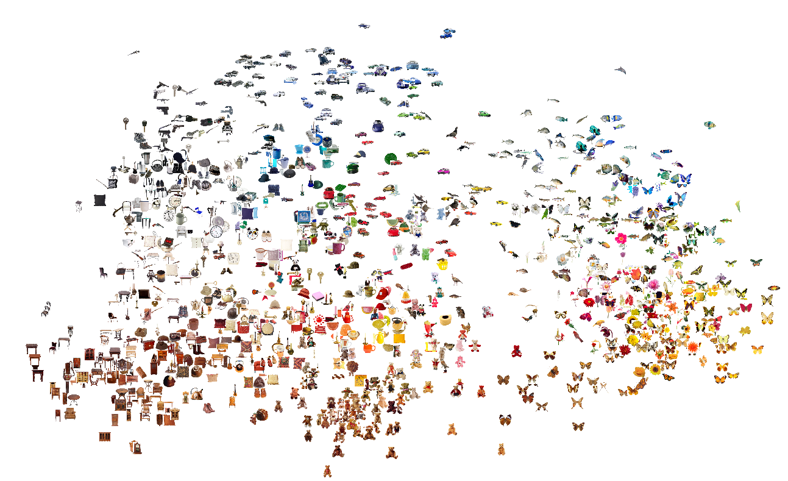
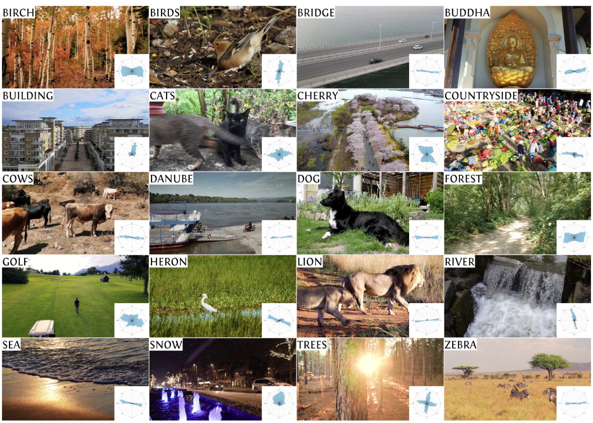
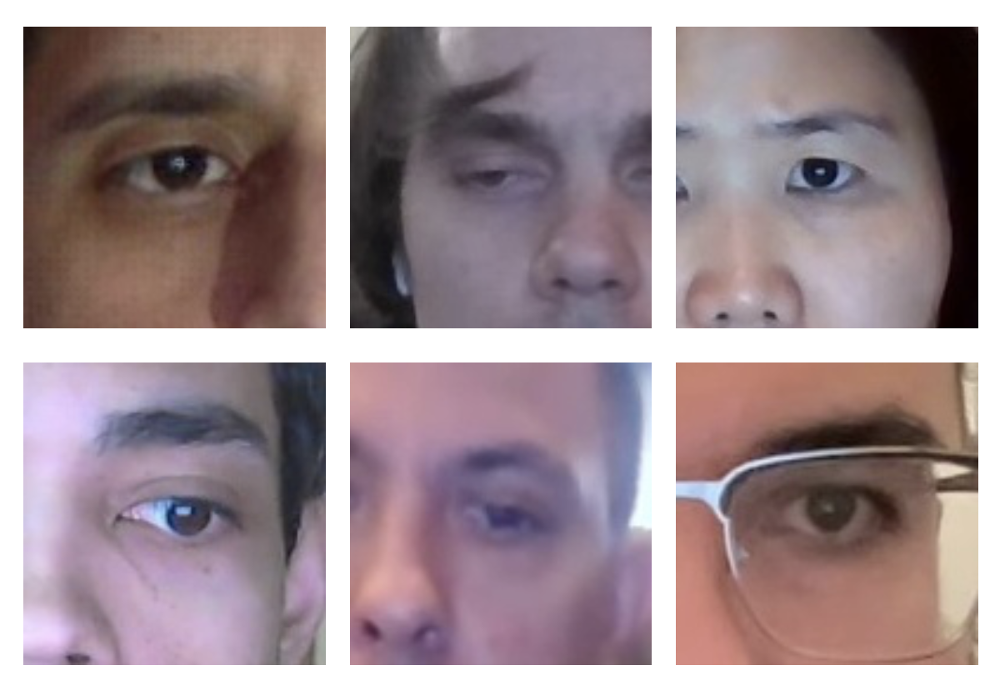

Research
Publications


Frequency-Adaptive Gaussian Grids for Efficient Image Representation
WACV 2027
To appear

Distractor similarity and category variability effects in search
Attention, Perception, & Psychophysics 2024
Short Papers and Posters

Detection of artifacts in clean and corrupted video pairs is influenced by artifact type and presentation modality
Vision Sciences Society 2025Poster

WEyeDS: A desktop webcam dataset for gaze estimation
ACM ETRA 2024Late-Breaking